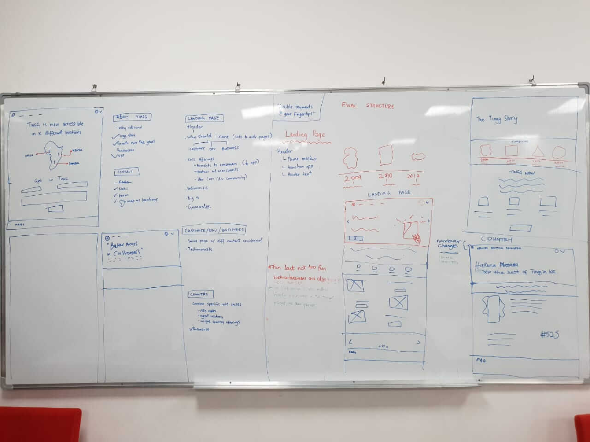

Designing a Website to Communicate Tingg Re-brand
Cellulant is a Payment Platform Infrastructure Service Provider that creates homegrown digital payments technology for African markets. It provides the platform that powers the internet of payments with dominant market position across 12 Sub-Saharan countries.
The company was re-branding one of its digital products from Mula to Tingg and wanted a website to communicate the re-brand and communicate features of Tingg. The Head of Design at Cellulant visited my school, met with 3 of us with strong interests in design and gave us the opportunity to work on the project. The project was a 20-hour project and the process was condensed to produce the best results given the time.
The Brief
Build a 5-page website that represents the Tingg Brand and uses color and design to communicate to our Consumers, Businesses and developers.
My Role
I worked on this project with two awesome designers (Ariyike and Debbie) and it was an exciting experience. We worked remotely with the design team at Cellulant. I facilitated the session on brainstorming and deciding on our process, worked on the copies and brainstormed for ideas on the information architecture of the site.
Goals
The client expectation for this project was:
- Prototypes showing interactions on the site
- Map out the process of execution for this project to ensure it is great both from a UI and UX perspective.
- Highlight timelines and describe the plan to engage stakeholders
Our Process
- Understanding Tingg
- Research
- Analysing of Findings
- Information Architecture && Wireframing
- Iteration and Feedback
- Final Designs
The problem, as described in the introduction, was to “design a 5-page website that represents the Tingg brand and uses colour and design to communicate to Customers, Businesses and Developers who are interested in the brand”. There were different factors to consider from the problem statement. One important one was the need to understand the Tingg brand itself, including the products, positioning and unique selling points. It was also important to uderstand Tingg user groups as specified in the brief (i.e. Customers, Businesses and Developers). We came up with clarifying questions for the Designers at Cellulant to better understand the Tingg brand.
Due to the constraint on timing, we relied on information provided by Cellulant in understanding Tingg users and did not conduct primary research on our own. However, we supplemented that with secondary research on the internet. The secondary research also involved looking at existing feedback the product had already received from places like the Google Playstore. From recent comments on the product on Playstore, we realised that that it was necessary to reassure the users that the switch to Tingg was for beneficial ecause some of the feedback left indicated that they wanted the app reverted back to “Mula” which they were already comfortable with using.
We analysed the information we gathered from both secondary research and Cellulant's primary research. In addition to reassuring the users that the changes made to the app and brand were beneficial, some of the other things discovered from the analysis were that the unique service proposition and value varied from country to country. As a result of this, it was necessary to highlight what these differences are in a way that is easy to understand and visually obvious. A careful look at the “Tingg Brand Guide” document inspired our colour palette and design style choices. As seen in the image below, our design was aimed at reflecting the friendliness, confidence, and professionalism of the brand. The image is taken from the “Tingg Brand Guide” document and describes the colours and brand personality of Tingg.

To decide on the information architecture and site mapping, we had a brainstorm session where we consolidated ideas for the site architecture. Once we had concluded on an architecture, we assigned each member of the team, tasks. I took on the role of the UX Writer for the team while Ariyike and Debbie were responsibe for the UI. The images below show the information architecture and link tree of the site respectively.


Rapid protoyping of the wireframe of the site on a whiteboard.
We shared the initial design and a documentation of our process with the design team at Cellulant, received feedback and incorporated the feedback.
The final designs we came up with, a 5-page website. We collaborated on this project using Google drive. I shared a Google document with the team containing the copies and they uploaded the designs to the working folder.


Comments
"I like the playfulness of the designs and the UX."
"It absolutely meets the requirements for a good website."